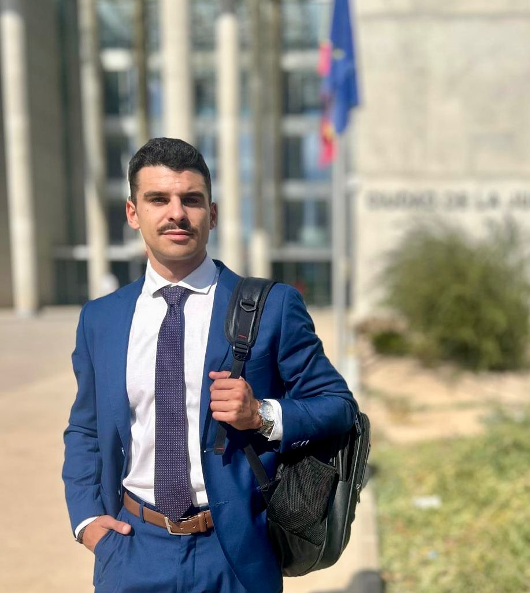

Querido o querida, me presento:
Soy Mauricio Jiménez, Graduado en Derecho por la Universidad de Murcia, Máster de acceso a la abogacía por la Universidad Europea de Valencia, Colegiado n.º 8153 del Ilustre Colegio de la Abogacía de Murcia, miembro de la Asociación de Jóvenes Abogados de Murcia y en continua formación a través de los cursos impartidos por ICAMUR y el Consejo General de la Abogacía.
Desde pequeño he sentido una gran pasión por la lectura, la biología, el deporte y siempre he sido curioso por aprender cosas nuevas.
Para que me conozcas un poco más te contaré algunas cosas sobre mi pasado: en mi juventud fui triatleta de alto rendimiento becado por la Federación Española de Triatlón en un Centro de Alto Rendimiento durante tres años, llegando a competir a nivel internacional por España. Esta experiencia, que compaginé con mis estudios, me hizo desarrollar un gran sentido del esfuerzo y el sacrificio, lo que me llevó a trabajar durante todo mi período de estudios universitarios. Desde socorrista, camarero, operador en un almacén o entrenador de natación y triatlón, he trabajado en numerosas profesiones diferentes, que me han hecho tener una visión global de la vida, un conocimiento general de la sociedad y sobre todo una empatía y capacidad de adaptación a las personas y situaciones que me rodean que, sinceramente, me enorgullece.
Finalizando mi etapa universitaria, empecé a concentrarme en la profesión de la abogacía, trabajando durante un año para un letrado de Allianz, llevando asuntos de seguros judicial y extrajudicialmente, así como 6 meses para un abogado independiente llevando todo tipo de asuntos, lo que me aportó una consolidada experiencia antes de lanzarme a iniciar esta maravillosa aventura que es ayudar a las personas.
Hoy ejerzo mi profesión de manera independiente, siendo ese apoyo y respaldo tanto por los letrados que buscan una segunda opinión como por los clientes que requieren de un trato cercano y personalizado.
El compromiso, el esfuerzo, la pasión por lo que hago y la transparencia me definen. Confiar en mis servicios puede que no te garantice el éxito, pero te garantiza que voy a trabajar por ti y contigo, haciendo todo lo posible por mejorar tu situación, como si fuese mi propio problema, para que juntos lleguemos a la mejor de las soluciones posibles.
La precisión y la excelencia en todas nuestras actuaciones son dos líneas de trabajo que nos definen, buscando a tu lado la opción más acorde a tus intereses.
Espero que te haya gustado conocerme un poco más, y yo estaré encantado de conocer tu historia y de ayudarte en cualquier asesoramiento o problema que tengas. Cuéntame sin compromiso tu historia y tu caso, te atenderé encantado, sin prejuicios y con lo mejor de las atenciones para que conozcas tus derechos y posibilidades en cualquier problema que puedas tener.
Háblame o llámame sin compromiso, estoy aquí para ayudarte.
Un abrazo,